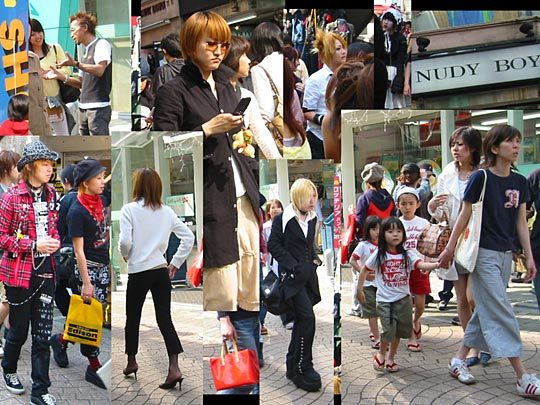
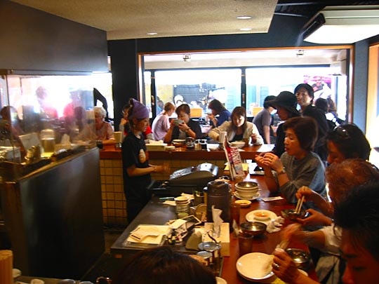
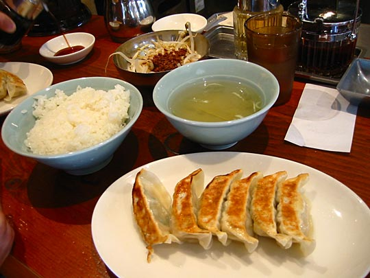

Photos from our second trip to Japan, 18 March–2 April 2005 are on Flickr
Japan, 18-28 April 2003
- Index
- Arrival, Day 1: Tsukiji Fish Market; Hama-Rikyu Gardens [1.66Mb]
- Day 1 (continued): DesignFesta [1.25Mb]
- Day 2: Meiji Shrine and inner garden; Harajuku; Nezu Institute; Aoyama cemetery [2.38Mb]
- Day 3: Ghibli Museum, Mitaka; Shinjuku [1.66Mb]
- Day 4: Hakone: Taisekan ryokan [1.81Mb]
- Day 5: Hakone: Taisekan; Hakone Museum of Art; ropeway to Owakudani; Lake Ashino-ko [1.93Mb]
- Day 6: Kamakura [4.37Mb]
- Day 7: Senso-ji temple; Asakusa; Joe [1.46Mb]
- Day 8: Koishikawa Korakuen garden; Seibu department store; Ginza [1.2Mb]
- Day 9: Shinjuku-gyoen gardens [2Mb]
- Day 9 (continued): Harajuku, Ueno Park and the Tokyo National Museum, Roppongi Hills [1.59Mb]
Sunday 27 April (continued): Harajuku people-watching and shopping; National Museum & Ueno Park; Roppongi Hills
Didn't find time to write on the day, so this is from memory.
Last Sunday we were in Harajuku it was rainy. Today was sunny, so the fruits were out in force. Despite sticking a label on our camera that reads "Shasin totte ii desu ka?" (May I take your picture?) we were mostly too bashful, photographing on the sly instead. Other tourists weren't so inhibited. I gagged with irritation to overhear an American woman tell her friend with conviction "they have to dress so wacky because they all look the same."
This being our last day, we did a lot of shopping. Lots of Studio Ghibli merchandise (tatami table mats and crockery mostly, see loot) at Kiddy Land, stuff at Daisu 100-Yen shop, etc.)
Goths on the wide pedestrian bridge at the entrance to Yoyogi park
Teddybears as accessories were much in evidence. For a handbag, she has a little blue camera case.
These weren't the only model scouts we saw that day.
Just remembered another memorable image, which we unfortunately didn't photograph. We saw someone taking those classic stock photography photos with the smart black executive talking on his mobile phone against a smart, bustling Tokyo backdrop.
Smart shops and people along Omote-sando

All these were taken along Takeshita-dori, while I was waiting outside the 100-Yen store waiting for Kelly to finish shopping

Excellent gyoza lunch at Harajuku Gyoza Lou in the same little alleyway we had our shabu shabu on Thursday

Ueno Park and Tokyo National Museum
From here we headed for the Tokyo National Museum (I was feeling we didn't do nearly enough museums yet.) Timing worked out very well. Enough time to for a satisfying visit before it closed, which was just the start of a gorgeous sunset.
It was a pity not spending more time with the art, though. Fascinating to see this art tradition in parallel to the West, completely separate up to the 18th century. But foreign influence seems to play a large part in Japan's culture in general. A huge cultural debt to China, from which much of the art tradition (and of course the writing system) is derived, and from the 19th century, there were conscious efforts to learn from the West. Western artists were inspired by Eastern imagery too, but did they set up foundations to study and emulate it? Should read more about this history. (Kelly's just finished reading Shogun, so she probably knows more than me.) Some of the highlights of the museum were more Ogata Korin screens, a whole room of Hiroshige and Hokusai prints, a room of traditional costume, laquerware, calligraphy, etc.
The main entrance of the National Museum
More fruits photographing each other in Ueno Park. Museum in the background.
Musicians on the wide pedestrian bridge crossing a wilderness of railway tracks on the way to Ueno station. Also a nice vibe around here on a weekend if the weather's good. Otherwise I imagine it could be quite desolate.
Roppongi Hills
All week long we've been seeing TV coverage of Tokyo's newest skyscraper, including Richard Branson's grinning mug who presumably footed part of the bill (the complex features Virgin cinemas.) (Even the logo was designed by a Brit, Jonathan Barnbrook. Mind you, all the lovely poster imagery was by the inimitable Takashi Murakami.) We got more information from the Japan Times on Tuesday:
[The Roppingi Hills complex] includes a 54-story office tower, residential space and entertainment and cultural facilities, [and] will offer visitors and residents a "unique" experience, Minoru Mori, president of Mori Building Co., said Monday.
Roppongi Hills features a 270-meter-tall office tower with a museum and an observatory providing a panoramic view of Tokyo, about 200 shops and restaurants, a cinema complex with nine screens and residential towers. It opens Friday.
Seeing Tokyo from the top of a skyscraper, probably the Metropolitan Government building, was already on our list. But this seemed too good an opportunity to miss — trying out Tokyo's newest attraction 2 days after opening. Besides that, we hadn't been to the Roppongi area yet (renowned for expensive gaijin bars and adult entertainment.) Joe was also very keen for us to go.
Timing was magical. We reached the tower at sundown, and watched the dusk change into darkness, and the neon lights come on, from 52 stories up.
See also the Roppongi Hills website and the Tokyo City View website. The TCV site has an excellent Flash-based panorama (night or day) with all the landmarks explained (in Japanese).

Looking up. Not a particularly beautiful building, I thought.
So this is where Louise Bourgeois's spider sculpture Maman ended up after its run in the Tate Modern ended. We saw a little Japanese girl very frightened of it — her father carried her over to one leg and she very gingerly touched it with a finger

Going up. Everywhere there are scores of uniformed attendants smiling and greeting and bowing, overkill hospitality that we had come to expect. The lift to the top is breathtakingly fast, about 5 floors per second, your ears popping along the way.
The first view that greets you - North-East. Further east, you see Tokyo Tower and the Rainbow Bridge.
Everyone's showing their friends where they are, using the ubiquitous i-mode picture phones
I photographed this building because it gave a good sense of scale to the height we're at. I read later it's part of the RH complex, one of the three residential tower blocks.
The view South-West and West has probably the most familiar landmarks, for us. The highway at left is Roppongi-Dori, I think, which leads directly to Shibuya where our hotel is.
The cluster of skyscrapers due West is of course Shinjuku. The park in front is Aoyama cemetery.
Roppongi-Dori towards Shibuya. The tower at the end is, I think, the Mark City centre near Hachiko Square.

My sentiments exactly
We hung around quite long, doing about 3 circuits of the observatory, until it was completely dark
We wondered whether to explore Roppongi some more, but it had been a long day and we decided to head for dinner. We'd been planning to go to Tonki for days. Tonki's a famous tonkatsu restaurant, worthwhile for the experience alone. Upon entry, you're immediately asked whether you're having rosukatsu or hirokatsu. (Fortunately we were prepared for this and not completely nonplussed.) Then you join the queue of people waiting — just as many as those actually eating. The queue's not in any order — somehow the guy remembers in what sequence people entered, and what they ordered. The staff seems to include three generations of the same family, judging by resemblances. Everyone eats at the counter around the kitchen, although there is also an upstairs floor with tables. The moment a space at the counter opens up and it's your turn, you're motioned to take a seat and your food arrives seconds later.
Tonki restaurant

View from the entrance

Peanuts and beer before the food arrives. Then as much rice and cabbage as you want with your tonkatsu (they refill it whenever it runs low), but be careful of the mustard, which is extremely hot. Miso soup for afterwards.
I also enjoyed the beautiful carpentry of the whole place. Everything's of smooth unpainted close-grained wood, feeling like the wood bathtub in Taisekan.

From outside. On the way here, we saw our only sociopath of the trip. A strange old man was walking along the main street, flinging down every bicycle or parked motorcycle he passed. (Reminding a little bit of the hermit in Otomo's Domu.)
Next: Departure
See also the special collections:
- Japanese posters, images, TV, and other designs [2.4Mb]
- Interesting design details and ideas [0.8Mb]
- Food [2.36Mb]
- Loot [2.45Mb]
{kind=link}